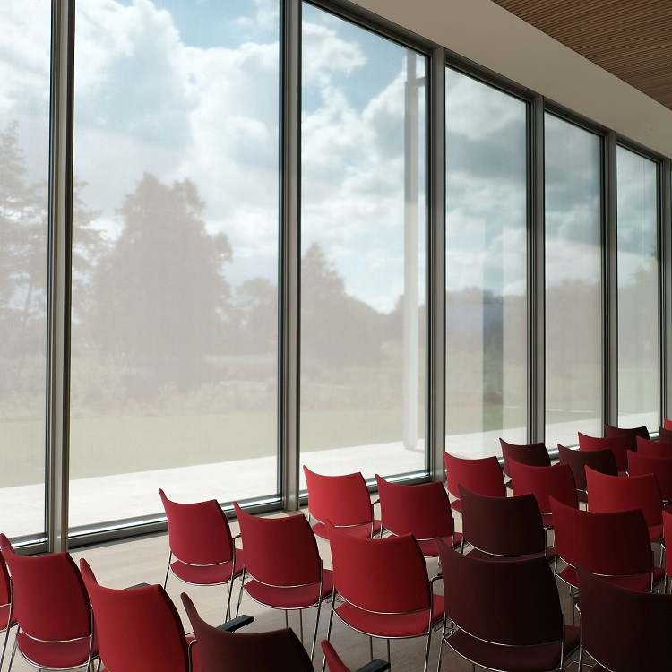

About
Il progetto
Questo progetto, a cura di studenti e laureati del corso di laurea internazionale di DHDK (Digital Humanities and Digital Knowledge), con il patrocinio del dipartimento d'eccellenza FICLIT (Filologia Classica e Italianistica), nasce dalla volontà di creare un punto di contatto e mediazione tra enti pubblici e privati impegnati nel settore del lifecycle management di oggetti culturali e umanisti digitali..
Dopo il successo del ciclo di incontri dell'anno precedente, torniamo quest'anno con un nuovo ciclo d'incontri. Questa volta il focus è sul Dato. Dalla nascita dell'espressione Big Data all'intelligenza artificiale, i dati rappresentano una delle questioni più importanti della contemporaneità.
Lo scopo del ciclo d'incontri è di affrontare i diversi aspetti del dato partendo dal definire cosa significhi questo termine per affrontarne poi il ciclo vitale, dalla sua creazione fino alla visualizzazione.
A chi ci rivolgiamo
L'evento è aperto a tutti! Ci rivolgiamo in particolar modo a studenti e curiosi del mondo delle Digital Humanities. Però chiunque voglia approfondire il tema del dato è benvenuto a guardare le conferenze e partecipare ai workshops!
Studenti ed esperti
di Digital Humanities
Studenti già iscritti a un corso di Digital Humanities, laureati, dottorandi e esperti del settore.
Aziende ed enti
Aziende ed Enti incuriositi o interessati ad una prospettiva diversa ed umanista sulla tematica del dato nel mondo digitale
Interessati
L’evento è rivolto a chiunque sia interessato alla tematica del dato sotto varie prospettive
Ospiti
Sabina Leonelli
professoressa di Filosofia e Storia della Scienza alla Exeter University
Chiara Veninata
ICCD
Giulia Sudano
think thank PERIOD
Nicola Bruno
Dataninja
Programma
Clicca sulla giornata per scoprire il programma o scarica il flyer dell'evento. Ogni giornata prevede una conferenza aperta a tutti che sarà disponibile in live tramite il nostro canale YouTube e a seguire un workshop a numero chiuso accessibile tramite la piattaforma Microsoft Teams, organizzato da ogni relatore che è intervenuto nella conferenza. L'accesso al workshop è riservato esclusivamente agli utenti registrati per un massimo di 30 posti. Iscrizione tramite il link disponibile nella sezione Booking.
-

Apertura dei lavori
17:00-17:15
Presentazione progetto "Storie di Dati" ed introduzione alla serata
.
-

Pensare il dato
17:15 - 18:15
Intervista a Sabina Leonelli -

Conclusioni
18.15 - 18:30
Discussione, conclusione e saluti di rito.
-
Apertura dei lavori
9:45 - 10:00
Presentazione della giornata.
-
Interpretare il dato
10:00 - 11:00
-

Pausa
11:00 - 11:15
-

Workshop
11:15 - 12:45
Workshop a cura di Nicola Bruno (Dataninja)
-
Apertura dei lavori
9:45 - 10:00
Introduzione alla giornata
-
Visualizzare il dato
10:00 - 11:00
Intervista con Tommaso Elli (Density Design) ed ospite TBA. -
Pausa
11:00 - 11:15
-
Booking
Per partecipare al workshop compila il modulo di richiesta di partecipazione. Riceverai una mail di conferma di partecipazione. Non sono richieste competenze specifiche ma, vista la varietà delle tematiche affrontate, alcuni workshop potrebbero richiedere l'installazione di tools supplementari. Riceverete maggiori istruzioni una volta compilato il modulo d'iscrizione. Ricordiamo che l'accesso a ogni workshop è limitato a 30 persone.
Le iscrizioni ai workshop apriranno sabato 8 Maggio.
Compila il modulo di richiesta per iscriverti**Compila il modulo di richiesta di partecipazione senza temere per la tua privacy! Per noi la privacy è molto importante e ci impegnamo a non divulgare i tuoi dati. Per ulteriori informazioni è possibile consultare la nostra Informativa sulla Privacy.
Contatti e newsletter
Per qualsiasi informazione:
Lasciaci un messaggio a dhdkevents@gmail.com
o iscriviti alla newsletter per restare aggiornato su tutti gli incontri!